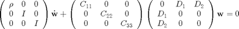
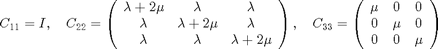
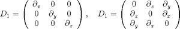
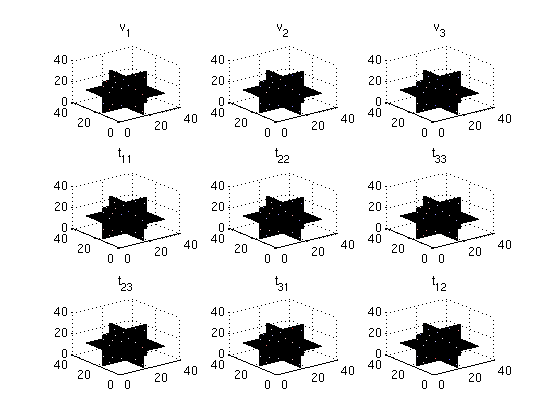

3D Elastic wave-equation

where


Contents
set parameters
% method, fourier or cheb method = 'fourier'; % dimension nd = 3; % size of domain (m) L = 1e3*ones(1,nd); % # of gridpoints N = 30*ones(1,nd); % # of nodes for spectral method Ns = 10*ones(1,nd); % time interval T = .5; % medium parameters rho0 = 1e3; cp0 = 2e3; cs0 = 1e3;
define matrices etc.
store = false; % Gradient operator Dx = opDel(Ns,L,1,method,store); Dy = opDel(Ns,L,2,method,store); Dz = opDel(Ns,L,3,method,store); % O = opZeros(prod(Ns)); % spectral grid xc = Dx.x{1}; yc = Dy.x{2}; zc = Dz.x{3}; [xxc,yyc,zzc] = ndgrid(xc,yc,zc); % stiffness matrix, note that Div = -Grad' ! D1 = [O Dz Dy;Dz O Dx;Dy Dx O]; D2 = opBlockDiag(Dx,Dy,Dz); OO = opZeros(size(D1)); S = [OO D1 D2;-D1' OO OO;-D2' OO OO]; % mass matrix rho = rho0*ones(Ns); lambda = rho0*(cp0^2 - cs0^2)*ones(Ns); mu = (cs0^2*rho0)*ones(Ns); M = opDiag([1./rho(:);1./rho(:);1./rho(:);ones(6*prod(Ns),1)]);%opBlockDiag(opKron(opDirac(3),opDiag(1./rho(:))),opDirac(6*prod(Ns))); C11 = opDirac(3*prod(Ns)); C22 = [opDiag(lambda(:)+2*mu(:)) opDiag(lambda(:)) opDiag(lambda(:));opDiag(lambda(:)) opDiag(lambda(:)+2*mu(:)) opDiag(lambda(:));opDiag(lambda(:)) opDiag(lambda(:)) opDiag(lambda(:)+2*mu(:))];%opKron(opDirac(3),opDiag(2*mu(:))) + opKron(opOnes(3),opDiag(lambda(:))); C33 = opDiag([mu(:) mu(:) mu(:)]);%opKron(opDirac(3),opDiag(mu(:))); C = opBlockDiag(C11,C22,C33); % regular grid x = linspace(0,L(1),N(1)); y = linspace(0,L(2),N(2)); z = linspace(0,L(3),N(3)); % interpolation A = opKron(opInt(zc,z,method),opInt(yc,y,method),opInt(xc,x,method)); % Initial conditions w = [p; ux; uy; uz] w0 = zeros([Ns 9]); w0(:,:,:,1) = exp(-1e3*(((xxc - mean(xc))/L(1)).^2 + ((yyc - mean(yc))/L(2)).^2 + ((zzc - mean(zc))/L(3)).^2)); w0 = w0(:)/max(abs(w0(:)));
solve ODE
tic options = odeset('Stats','on','OutputFcn',@odewbar); [t,wsol] = ode23(@(t,w)(M*C*S*w),[0 T],w0,options) ; toc
646 successful steps 45 failed attempts 2074 function evaluations Elapsed time is 93.744582 seconds.
plot
wsol = reshape(wsol,[length(t) prod(Ns) 9]); plotslice = @(u) slice(u,floor(N(1)/2) + 1,floor(N(2)/2) + 1,floor(N(3)/2) + 1); for j=1:1:length(t); v1j = reshape(A*squeeze(wsol(j,:,1).'),N); v2j = reshape(A*squeeze(wsol(j,:,2).'),N); v3j = reshape(A*squeeze(wsol(j,:,3).'),N); t11j = reshape(A*squeeze(wsol(j,:,4).'),N); t22j = reshape(A*squeeze(wsol(j,:,5).'),N); t33j = reshape(A*squeeze(wsol(j,:,6).'),N); t23j = reshape(A*squeeze(wsol(j,:,7).'),N); t31j = reshape(A*squeeze(wsol(j,:,8).'),N); t12j = reshape(A*squeeze(wsol(j,:,9).'),N); subplot(3,3,1); plotslice(v1j);title('v_1');colormap(seiscol); subplot(3,3,2); plotslice(v2j);title('v_2');colormap(seiscol); subplot(3,3,3); plotslice(v3j);title('v_3');colormap(seiscol); subplot(3,3,4); plotslice(t11j);title('t_{11}');colormap(seiscol); subplot(3,3,5); plotslice(t22j);title('t_{22}');colormap(seiscol); subplot(3,3,6); plotslice(t33j);title('t_{33}');colormap(seiscol); subplot(3,3,7); plotslice(t23j);title('t_{23}');colormap(seiscol); subplot(3,3,8); plotslice(t31j);title('t_{31}');colormap(seiscol); subplot(3,3,9); plotslice(t12j);title('t_{12}');colormap(seiscol); drawnow; pause(.001); end